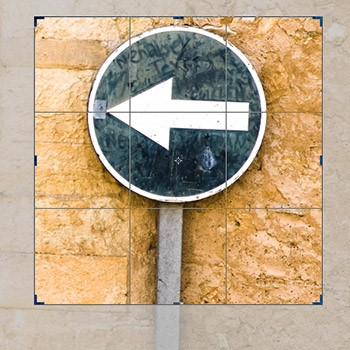

-
Crop Tool
The crop tool can be used to crop an image to delete or hide the image data that falls outside the selected crop area.
 Category: Crop and Slice Tool -
Perspective Crop Tool
The perspective crop tool can be used to crop and correct the converging verticals or horizontal lines in a picture with a single crop action.
 Category: Crop and Slice Tool
Category: Crop and Slice Tool
-
Slice tool and
Slice select toolThe slice tools in Photoshop are particularly useful for Web designer’s as these allow them to divide an image up into rectangular sections, and the slices can then be used in Photoshop to specify how each individual slice will be optimized, what file format a slice area should be saved in and what compression settings should be used.
Category: Crop and Slice Tool